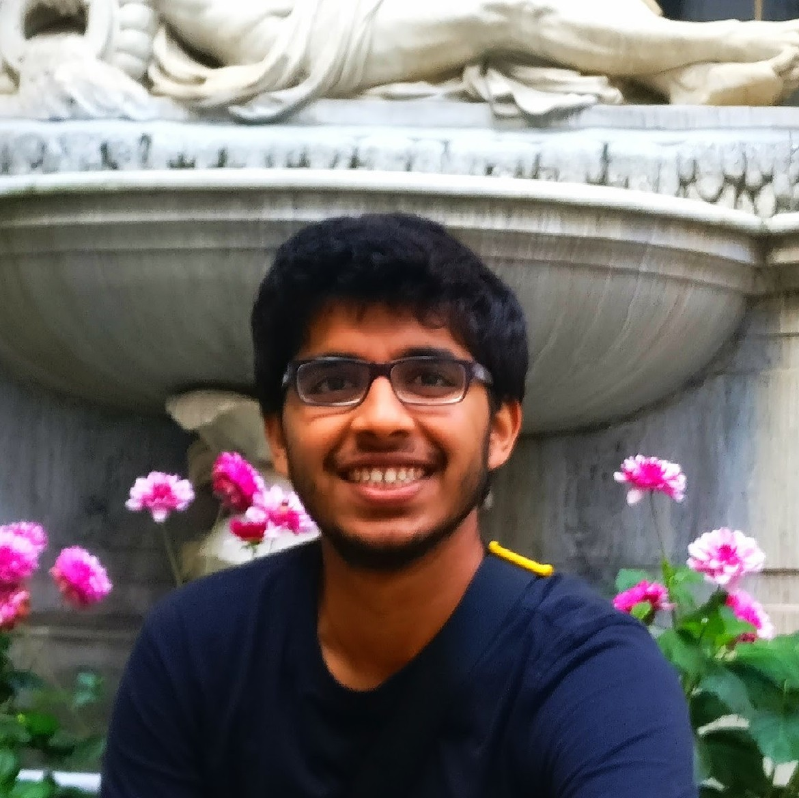

About me
|  |
I am Sayantan Khan, a graduate student in Mathematics at the University of Michigan (and previously an undergraduate at Indian Institute of Science). This website contains accounts of things I'm currently working on, along with details of some of my past work. I also maintain a homepage on the umich.edu domain.
Timeline
Here's a short description of some of the places I've been at since 2014.
- June 2019: I was at MSRI attending the summer school on Random and arithmetic structures in topology.
- June 2019: I was in Houston for the Houston Summer School on Dynamical Systems.
- August 2018 onwards: Graduate student at the Mathematics department at University of Michigan, Ann Arbor.
- July 2018: I was at IISER Pune attending the AIS on algebraic geometry.
- February 2018: I was at Freie Universität Berlin attending the BMS Student Conference and BMS Days.
- November 2017: I was at International Centre for Theoretical Sciences, attending the Geometry, Groups and Dynamics program.
- May - July 2017: I was at University of Münster's Mathematics Department as a DAAD-WISE Fellow.
- January 2017: I was at Chinese University of Hong Kong, attending the ITCSC-INC Winter School.
- July 2016: I was at National Centre for Biological Sciences, attending the Physics of Life Monsoon School.
- August 2014 - April 2018: Mathematics major at Indian Institute of Science.